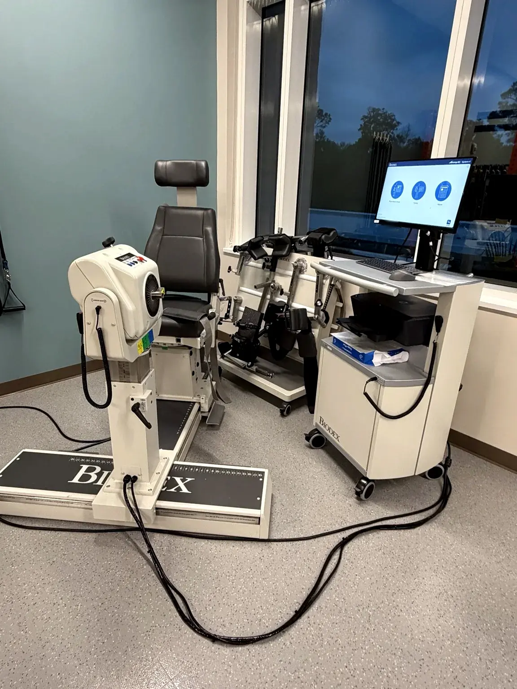
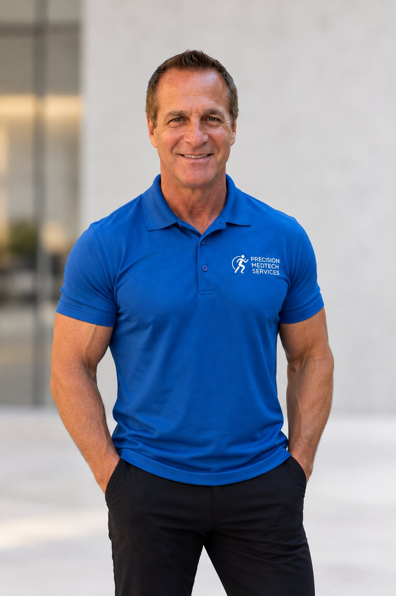

Extend the life of your rehabilitation equipment.
Keeping Care in Motion.
Specialized Biodex repair available nationwide, and comprehensive physical therapy equipment service throughout Florida — backed by more than 35 years of hands-on field experience, with direct access to the technician doing the work.

The problems rehab facilities call us about.
Your equipment is aging.
Older systems can become unpredictable, and manufacturer support isn’t always available. Before you replace it, get an honest assessment of what can be repaired.
Downtime costs you patients.
When a treadmill, dynamometer or cycle is out of service, schedules suffer. Prompt diagnosis and focused troubleshooting get you back to work.
You want straight answers.
No runaround. You communicate directly with the technician doing the work, and you hear plainly what is feasible and what isn’t.
Technical expertise for the equipment your team relies on.
From advanced rehabilitation systems to everyday therapy equipment, our work is focused on safe, dependable operation.
Biodex Repair
Isokinetic Systems, Balance System SD, Gait Trainer 3, and other Biodex rehab equipment.
Learn more → 02Rehab Equipment
NuStep, SciFit, Landice, Matrix and more: treadmills, steppers, cycles, strength equipment and tables across Florida.
Learn more → 03Preventive Maintenance
Planned inspections and maintenance for rehabilitation facilities.
Learn more →Biodex service expertise that doesn’t stop at the basics.
Chris Senzamici is the only factory-trained independent technician in the country for Biodex/SMTI equipment, with 30 years as a Biodex field service engineer. When an advanced system needs attention, you want someone who understands its electronics, mechanics, software, and clinical purpose. We service the Biodex physical medicine line, including Isokinetic Systems (System 4 Pro, 3 and 2), the Balance System SD, and the Gait Trainer 3.
Service availability and parts feasibility depend on the model and fault — we tell you before we promise.
Your equipment. Your patients. Your decision.
Healthcare facilities have full authority to select the qualified service provider of their choice for the physical therapy and Biodex equipment they own, regardless of manufacturer affiliation. Even when replacement parts must come through the manufacturer or distributor, you keep the freedom to choose who performs the repair.
Your right to choose →
One technician. Direct communication.
Customers communicate directly with the person doing the work — honest assessments, effective repairs where feasible, and service that respects their time and investment.
Chris Senzamici has spent more than 35 years in the field — from R&D engineering at Cybex, to Biodex in physical therapy, radiology and nuclear medicine, to operating-room equipment at Stryker.
Meet Chris →Clear communication. Focused troubleshooting.
Describe the problem
Send the model, symptoms, location, and any error messages.
Assess the options
We discuss service feasibility, timing, and the appropriate scope of work.
Get back to work
On-site diagnostics, repair, testing, and a clear service summary.
Trusted by teams, campuses, hospitals and NASA.
The same careful, direct service for the facilities that depend on their equipment every day.
Professional Sports Teams (MLB & NFL)
Universities & Athletic Departments
Hospitals & Health Systems
PT Clinics & Wellness Centers
NASA & Research Facilities
Commercial Gyms & Strength Facilities
FIELD SERVICE EXPERIENCE INCLUDES ENGAGEMENTS AT NASA KENNEDY SPACE CENTER · UF HEALTH · ADVENTHEALTH · LEE HEALTH · CINCINNATI CHILDREN’S HOSPITAL
Service area: Biodex/SMTI equipment nationwide. Physical therapy and fitness equipment throughout Florida, including Orlando, Tampa, Jacksonville, Miami, Gainesville, Tallahassee, Naples, Sarasota and Pensacola. While on site for Biodex/SMTI service anywhere in the country, we can also service your other PT and fitness equipment during the same visit.
Need dependable equipment service?
Share your equipment model, location and service needs. We’ll help you determine the next step.